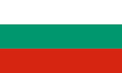

¿De qué se trató el Mundial de 1962?
La Copa Mundial de la FIFA 1962 fue la séptima edición del torneo y se disputó en Chile entre el 30 de mayo y el 17 de junio de 1962. Representó el regreso de la máxima cita futbolística a tierras sudamericanas tras doce años de ausencia, convirtiéndose en un símbolo de superación y resiliencia ante la adversidad.
El campeonato estuvo marcado por varias particularidades. Estuvo a punto de cancelarse debido al catastrófico terremoto de Valdivia de 1960 —el más potente registrado en la historia de la humanidad—, obligando al comité organizador a reconstruir el plan de sedes a tiempo récord. A nivel deportivo, se caracterizó por un juego sumamente físico, táctico y defensivo, con un marcado descenso en el promedio de gol.
A pesar de perder prematuramente a su máxima estrella, Pelé, por lesión, Brasil demostró una enorme profundidad de plantel, apoyándose en un excelso Garrincha para revalidar su corona mundial. Chile, anfitrión del torneo, alcanzó un histórico tercer puesto ante su propio público, en uno de los torneos más recordados de la historia del fútbol sudamericano.
Informacion que tenes que saber
Info general
- Pais Anfitrion: Chile
- Fecha de Inicio:
30 de Mayo de 1962
(30/05/1962) - Fecha de Finalizacion:
17 de Junio de 1962
(17/06/1962) - Duracion: 19 dias
- Organizador: FIFA
- Edicion: VII
Estadisticas
- Partidos jugados: 32
- Goles anotados: 89
- Promedio de gol: 2,78
- Máximos goleadores:
Garrincha, Vavá, Leonel Sánchez,
Flórián Albert, Valentin Ivanov
y Dražan Jerković
(6 jugadores con 4 goles) - Final:
Brasil 3 - 1 Checoslovaquia
info de la Ciudad
- Ciudades Sede: 4
- Selecciones Participantes: 16
- Estadios Utilizados: 4
- Estadio Principal:
Estadio Nacional
(Santiago de Chile) - Asistencia total:
893.172 espectadores
Podio
| Posicion | Seleccion | Bandera |
|---|---|---|
| 1º Puesto | Brasil |  |
| 2º Puesto | Checoslovaquia |  |
| 3º Puesto | Chile |  |
| 4º Puesto | Yugoslavia |  |
(Nota: El partido por el tercer puesto se disputó el 16 de junio de 1962. Chile venció a Yugoslavia por 1-0 y obtuvo así el mejor resultado de su historia en una Copa del Mundo hasta ese momento).
Historia completa de la Copa Mundial de la FIFA 1962
La FIFA eligió a Chile como sede en su congreso de 1956 celebrado en Lisboa, superando la candidatura de Argentina. La designación buscaba reactivar el fútbol en Sudamérica. Sin embargo, el 22 de mayo de 1960, el sur de Chile fue sacudido por el megaterremoto de Valdivia, que devastó gran parte de la infraestructura del país. Ante la tragedia, el presidente del comité organizador, Carlos Dittborn, pronunció una frase que quedó grabada en la historia: "Porque no tenemos nada, lo haremos todo". Lamentablemente, Dittborn falleció por un ataque cardíaco apenas un mes antes del inicio, sin ver cumplido su sueño.
Debido al terremoto, la organización tuvo que descartar sedes originales como Concepción, Talcahuano y Valdivia, reduciendo el mapa a solo 4 ciudades y 4 estadios acondicionados a marchas forzadas. La fase de clasificación dejó fuera a grandes selecciones como Francia y Suecia, ambas en el podio del Mundial anterior, mientras que debutó Colombia y clasificaron potencias europeas como Italia, España, Inglaterra, la Unión Soviética y Alemania Federal.
Desarrollo del torneo
El Mundial comenzó el 30 de mayo de 1962. Desde los primeros días, el torneo se tiñó de una atmósfera de extrema dureza física y planteamientos ultradefensivos. Brasil inició con solvencia venciendo a México, pero en el segundo encuentro ante Checoslovaquia, Pelé sufrió un desgarro muscular que lo marginó por el resto de la competencia.
Ante la baja de la estrella, Garrincha asumió el liderato absoluto del equipo con regates indescifrables y goles cruciales, secundado por un brillante Amarildo. Por el otro lado del cuadro, el anfitrión Chile, impulsado por una hinchada fervorosa y figuras como Leonel Sánchez, avanzó con fiereza eliminando a Italia y a la URSS. En semifinales, un imponente Brasil frenó el sueño chileno al derrotarlos por 4-2.
La gran final
El 17 de junio de 1962, el Estadio Nacional albergó la gran final entre Brasil y Checoslovaquia ante más de 68.000 espectadores. Los europeos abrieron el marcador por medio de Josef Masopust a los 15 minutos, pero la ventaja duró poco. Apenas dos minutos después, Amarildo igualó las acciones. En el segundo tiempo, Zito y Vavá sentenciaron el 3-1 definitivo.
Brasil se coronó bicampeón del mundo, igualando la gesta lograda por Italia en la década de 1930, y consolidó una de las épocas doradas más gloriosas de la historia del balompié. Garrincha fue reconocido como la figura indiscutida del torneo, siendo el primer jugador en la historia en liderar a su selección a un título mundial en ausencia de otro gran astro.
⚽ Pelota Oficial del Mundial 1962

CRACK
La Crack fue la pelota oficial utilizada durante la Copa Mundial de la FIFA Chile 1962. Fabricada artesanalmente en cuero natural, mantuvo la tradición de los balones cosidos a mano de las ediciones anteriores, aunque con mejoras en la distribución de los paneles para lograr mayor esfericidad y precisión de vuelo.
Información General
Nombre: Crack
Fabricante: Fabricación artesanal chilena
Material: Cuero natural cosido a mano
Color: Marrón / Naranja
Sistema de cierre: Cordones de cuero
Torneo: Copa Mundial FIFA Chile 1962
Características
- Fabricada en cuero natural de alta calidad.
- Cosida a mano por artesanos locales.
- Mejor distribución de paneles respecto a ediciones anteriores.
- Seguía absorbiendo agua bajo la lluvia, aumentando su peso.
- Mantenía el sistema de cierre con cordones, herencia de los primeros mundiales.
Dato curioso
A diferencia de la polémica del Mundial de 1930, en 1962 no hubo disputa por el balón de la final. Sin embargo, el torneo fue escenario de otra curiosidad relacionada con un objeto en el campo: un perro callejero invadió el terreno de juego durante el partido entre Brasil e Inglaterra en cuartos de final, burlando a los guardias y a los propios futbolistas. El inglés Jimmy Greaves logró atraparlo, pero el can terminó orinando su camiseta. Garrincha adoptó al perro posteriormente, convirtiéndose en una de las anécdotas más míticas del torneo.
Selecciones Participantes
Europa
 Alemania Federal
Alemania Federal 
Bulgaria Checoslovaquia  España
España  Inglaterra
Inglaterra  Italia
Italia  Hungría
Hungría  Suiza
Suiza  Unión Soviética Yugoslavia
Unión Soviética Yugoslavia Sudamérica
 Argentina Brasil (Vigente campeón) Chile (Anfitrión)
Argentina Brasil (Vigente campeón) Chile (Anfitrión)  Colombia
Colombia  Uruguay
Uruguay Norteamérica
 México
México
Sedes |
||||
|---|---|---|---|---|
|
El Mundial de 1962 se disputó en cuatro ciudades chilenas, con el Estadio Nacional de Santiago como escenario principal. Debido al devastador terremoto de Valdivia de 1960, las sedes originales previstas como Concepción, Talcahuano y Valdivia debieron ser descartadas. El comité organizador trabajó contrarreloj para acondicionar los cuatro estadios disponibles, logrando un torneo memorable a pesar de las enormes dificultades. El estadio de Rancagua fue renombrado "Carlos Dittborn" en honor al presidente del comité organizador fallecido semanas antes del inicio del torneo. El Estadio Sausalito de Viña del Mar y el estadio de Arica completaron el cuarteto de sedes que hizo posible una Copa del Mundo que parecía imposible de organizar. |
||||
| Nombre del Estadio | Estadio | Descripción | Capacidad aprox. | Partidos Jugados |
Estadio NacionalSantiago de Chile |
 |
Fue el estadio principal del torneo y el escenario de los partidos más importantes, incluyendo la gran final entre Brasil y Checoslovaquia. Con capacidad para aproximadamente 66.000 espectadores, albergó 10 partidos en total. Es el estadio más importante de Chile y uno de los recintos más emblemáticos de Sudamérica. | 66.000 | 10 |
Estadio SausalitoViña del Mar |
 |
Ubicado en la ciudad balnearia de Viña del Mar, el Estadio Sausalito fue una de las sedes más concurridas del torneo por su ambiente festivo y su cercanía al mar. Albergó 9 partidos con una capacidad aproximada de 21.000 espectadores. En su cancha se jugaron encuentros memorables del grupo donde participó Brasil. | 21.000 | 9 |
Estadio Carlos DittbornArica |
 |
Ubicado en el extremo norte de Chile, este estadio fue renombrado en honor a Carlos Dittborn, presidente del comité organizador fallecido semanas antes del inicio del torneo. Con capacidad para aproximadamente 18.000 espectadores, albergó 7 partidos de la fase de grupos. | 18.000 | 7 |
Estadio Braden Copper CompanyRancagua (actual El Teniente) |
 |
Ubicado en la ciudad minera de Rancagua, este estadio era propiedad de la compañía minera Braden Copper y actualmente se conoce como Estadio El Teniente. Con capacidad para aproximadamente 18.000 espectadores, albergó 6 partidos de la fase de grupos, incluyendo encuentros de Alemania Federal e Italia. | 18.000 | 6 |
Árbitros de la Copa Mundial de la FIFA 1962 por país
| Árbitros | País |
|---|---|
| Ken Aston | Inglaterra |
| Cesare Jonni | Italia |
| Nikolai Latyshev | Unión Soviética |
| Pierre Schwinte |  Francia Francia |
| Juan Gardeazábal | España |
| Arturo Yamasaki | México |
| Leo Horn |  Países Bajos Países Bajos |
| Esteban Marino | Uruguay |
(Nota: Ken Aston, árbitro inglés del infame partido "Batalla de Santiago" entre Chile e Italia, fue tan marcado por el caos vivido en ese encuentro que años más tarde ideó las tarjetas amarilla y roja como sistema universal para comunicar sanciones sin necesidad de entender el idioma del árbitro.)
Fase de Grupos
Grupo 1
- Unión Soviética (4)
- Yugoslavia (3)
- Uruguay (2)
- Colombia (1)
Unión Soviética
2:0 (2:0)
Yugoslavia
Yugoslavia
3:1 (1:0)
Uruguay
Unión Soviética
4:4 (3:1)
Colombia
Uruguay
2:1 (1:1)
Colombia
Unión Soviética
2:1 (1:1)
Uruguay
Yugoslavia
5:0 (3:0)
Colombia
| Seleccion | Pts. | PJ | PG | PE | PP | GF | GC | Dif. |
|---|---|---|---|---|---|---|---|---|
| Unión Soviética |
5 | 3 | 2 | 1 | 0 | 8 | 5 | +3 |
| Yugoslavia |
4 | 3 | 2 | 0 | 1 | 8 | 3 | +5 |
| Uruguay |
2 | 3 | 1 | 0 | 2 | 4 | 6 | -2 |
| Colombia |
1 | 3 | 0 | 1 | 2 | 5 | 11 | -6 |
Grupo 2
- Chile (4)
- Alemania Federal (4)
- Italia (3)
- Suiza (0)
Chile
3:1 (2:1)
Suiza
Alemania Federal
0:0 (0:0)
Italia
Chile
2:0 (2:0)
Italia
⚡ Batalla de Santiago: Ken Aston expulsó a dos italianos; la policía intervino en cuatro ocasiones.
Alemania Federal
2:0 (1:0)
Suiza
Alemania Federal
2:1 (1:1)
Chile
Italia
3:0 (2:0)
Suiza
| Seleccion | Pts. | PJ | PG | PE | PP | GF | GC | Dif. |
|---|---|---|---|---|---|---|---|---|
| Chile |
4 | 3 | 2 | 0 | 1 | 5 | 3 | +2 |
| Alemania Federal |
4 | 3 | 2 | 0 | 1 | 4 | 2 | +2 |
| Italia |
3 | 3 | 1 | 1 | 1 | 3 | 2 | +1 |
| Suiza |
0 | 3 | 0 | 0 | 3 | 2 | 8 | -6 |
Grupo 3
- Brasil (4)
- Checoslovaquia (3)
- México (2)
- España (1)
Brasil
2:0 (1:0)
México
Checoslovaquia
1:0 (0:0)
España
Brasil
0:0 (0:0)
Checoslovaquia
⚡ Pelé sufrió el desgarro muscular que lo marginó del resto del torneo.
España
1:0 (1:0)
México
Brasil
2:1 (1:1)
España
Checoslovaquia
3:1 (1:1)
México
| Seleccion | Pts. | PJ | PG | PE | PP | GF | GC | Dif. |
|---|---|---|---|---|---|---|---|---|
| Brasil |
5 | 3 | 2 | 1 | 0 | 4 | 1 | +3 |
| Checoslovaquia |
3 | 3 | 1 | 1 | 1 | 2 | 3 | -1 |
| México |
2 | 3 | 1 | 0 | 2 | 3 | 4 | -1 |
| España |
2 | 3 | 1 | 0 | 2 | 2 | 3 | -1 |
Grupo 4
- Hungría (4)
- Inglaterra (3)
- Argentina (2)
- Bulgaria (1)
Argentina
1:0 (1:0)
Bulgaria
Hungría
2:1 (1:0)
Inglaterra
Inglaterra
3:1 (2:1)
Argentina
Hungría
6:1 (3:1)
Bulgaria
Argentina
1:1 (0:0)
Hungría
Inglaterra
0:0 (0:0)
Bulgaria
| Seleccion | Pts. | PJ | PG | PE | PP | GF | GC | Dif. |
|---|---|---|---|---|---|---|---|---|
| Hungría |
4 | 3 | 2 | 0 | 1 | 8 | 2 | +6 |
| Inglaterra |
3 | 3 | 1 | 1 | 1 | 4 | 3 | +1 |
| Argentina |
2 | 3 | 1 | 0 | 2 | 2 | 3 | -1 |
| Bulgaria | 1 | 3 | 0 | 1 | 2 | 1 | 7 | -6 |
Cuartos de Final y Semifinales
Cuartos de Final
Yugoslavia 1 Alemania Federal 0 Brasil 3 Inglaterra 1 Chile 2 Unión Soviética 1 Checoslovaquia 1 Hungría 0Semifinales
Brasil 4 Chile 2 Checoslovaquia 3 Yugoslavia 1Final
Brasil 3 Checoslovaquia 1Tercer puesto
El 16 de junio de 1962 se disputó el partido por el tercer puesto en el Estadio Nacional de Santiago de Chile. El equipo local, Chile, venció a Yugoslavia por 1-0 con gol de Eladio Rojas en el minuto 90, logrando así el mejor resultado de la historia de la selección chilena hasta ese momento ante su propia hinchada.
Chile
1-0
Yugoslavia
Máximos goleadores — Copa Mundial de la FIFA 1962
| Jugador | Goles | País |
|---|---|---|
| Garrincha | 4 | |
| Vavá | 4 | |
| Leonel Sánchez | 4 | |
| Flórián Albert | 4 | |
| Valentin Ivanov | 4 | |
| Dražan Jerković | 4 | |
| Amarildo | 3 | |
| Lajos Tichy | 3 | |
| Milan Galić | 3 | |
Equipo Estelar — Copa Mundial de la FIFA 1962
El equipo estelar del torneo fue elegido por los medios internacionales de prensa acreditados. Brasil dominó la selección con cuatro representantes, mientras que Checoslovaquia colocó dos jugadores como reflejo de su extraordinaria campaña hasta la final.
| Jugador | Posición | País |
|---|---|---|
| Viliam Schrojf | Portero | Checoslovaquia |
| Djalma Santos | Defensa | Brasil |
| Cesare Maldini | Defensa | Italia |
| Valery Voronin | Defensa | Unión Soviética |
| Karl-Heinz Schnellinger | Defensa | Alemania Federal |
| Josef Masopust | Mediocampista | Checoslovaquia |
| Zito | Mediocampista | Brasil |
| Garrincha | Delantero | Brasil |
| Flórián Albert | Delantero | Hungría |
| Vavá | Delantero | Brasil |
| Leonel Sánchez | Delantero | Chile |
Controversias de la Copa Mundial de la FIFA 1962
La edición de 1962 es ampliamente recordada en los manuales del fútbol como uno de los campeonatos más violentos e indisciplinados de la historia, contrastando fuertemente con la limpieza y el espectáculo del Mundial de Suecia 1958.
-
La Batalla de Santiago
La mayor controversia del torneo ocurrió el 2 de junio durante el partido de fase de grupos entre Chile e Italia, bautizado por la prensa internacional como la "Batalla de Santiago". Unas crónicas previas muy despectivas de periodistas italianos sobre el nivel de vida en Chile habían caldeado el ambiente. El partido fue una sucesión de patadas, puñetazos e insultos que desbordaron completamente al árbitro inglés Ken Aston. La policía chilena tuvo que intervenir en la cancha en cuatro oportunidades para detener las riñas y expulsar a dos jugadores italianos. El propio Aston, marcado de por vida por aquel caos, idearía años más tarde el sistema de tarjetas amarilla y roja.
-
El perro que retó a los futbolistas
Una de las anécdotas más simpáticas del torneo ocurrió durante el partido de cuartos de final entre Brasil e Inglaterra. Un perro callejero invadió el terreno de juego, logrando burlar a los guardias y regatear a los propios futbolistas. El delantero inglés Jimmy Greaves fue quien finalmente logró capturar al animal arrodillándose en el césped, pero el can terminó orinando su camiseta, desatando la risa de los espectadores. La historia tiene un final emotivo: Garrincha adoptó al perro tras el partido, y el animal lo acompañó durante el resto del torneo.
-
La sanción de Garrincha que la FIFA anuló
En las semifinales ante Chile, Garrincha fue expulsado tras responder a las provocaciones del defensa chileno Eladio Rojas. Según el reglamento vigente, eso le impedía jugar la final. Sin embargo, la Confederación Brasileña de Fútbol movilizó toda su maquinaria diplomática y presionó a la FIFA para que anulara la sanción, argumentando el historial de juego limpio previo del jugador. La FIFA cedió y Garrincha pudo disputar la final, siendo figura determinante en el título brasileño.
-
El fracaso rioplatense
Argentina volvió a decepcionarte al quedar eliminada en primera ronda por diferencia de goles ante Inglaterra, mientras que Uruguay sumó otra decepción al no poder superar su grupo, evidenciando una profunda crisis futbolística en la región rioplatense que contrastaba con el éxito del Brasil de Garrincha.
-
El torneo más defensivo hasta la fecha
La edición de 1962 registró un promedio de apenas 2,78 goles por partido, el más bajo hasta entonces en la historia de los Mundiales. El fútbol ultradefensivo y el juego físico fueron la tónica dominante, generando críticas generalizadas en la prensa internacional que calificó al torneo como decepcionante en términos de espectáculo, a pesar del gran nivel competitivo.
Tabla de Rendimiento y Posiciones Finales
| Posicion | Seleccion | Etapa Alcanzada | PJ | PG | PE | PP | GF | GC | DG | Rendimiento |
|---|---|---|---|---|---|---|---|---|---|---|
| 1 | Brasil |
Campeón | 6 | 5 | 1 | 0 | 14 | 5 | +9 | 91,7% |
| 2 | Checoslovaquia |
Subcampeón | 6 | 3 | 1 | 2 | 7 | 7 | 0 | 58,3% |
| 3 | Chile |
Tercer Puesto | 6 | 4 | 0 | 2 | 10 | 8 | +2 | 66,7% |
| 4 | Yugoslavia |
Cuarto Puesto | 6 | 3 | 0 | 3 | 10 | 7 | +3 | 50% |
| 5 | Hungría |
Cuartos de Final | 4 | 2 | 1 | 1 | 8 | 3 | +5 | 62,5% |
| 6 | Unión Soviética |
Cuartos de Final | 4 | 2 | 1 | 1 | 9 | 7 | +2 | 62,5% |
| 7 | Alemania Federal |
Cuartos de Final | 4 | 2 | 1 | 1 | 4 | 2 | +2 | 62,5% |
| 8 | Inglaterra |
Cuartos de Final | 4 | 1 | 1 | 2 | 5 | 6 | -1 | 37,5% |
| 9 | Italia |
Fase de Grupos | 3 | 1 | 1 | 1 | 3 | 2 | +1 | 50% |
| 10 | Argentina |
Fase de Grupos | 3 | 1 | 1 | 1 | 2 | 3 | -1 | 50% |
| 11 | México |
Fase de Grupos | 3 | 1 | 0 | 2 | 3 | 4 | -1 | 33,3% |
| 12 | España |
Fase de Grupos | 3 | 1 | 0 | 2 | 2 | 3 | -1 | 33,3% |
| 13 | Uruguay |
Fase de Grupos | 3 | 1 | 0 | 2 | 4 | 6 | -2 | 33,3% |
| 14 | Colombia |
Fase de Grupos | 3 | 0 | 1 | 2 | 5 | 11 | -6 | 16,7% |
| 15 | Bulgaria | Fase de Grupos | 3 | 0 | 1 | 2 | 1 | 7 | -6 | 16,7% |
| 16 | Suiza |
Fase de Grupos | 3 | 0 | 0 | 3 | 2 | 8 | -6 | 0% |
- PJ: PARTIDOS JUGADOS
- PG: PARTIDOS GANADOS
- PE: PARTIDOS EMPATADOS
- PP: PARTIDOS PERDIDOS
- GF: GOLES A FAVOR
- GC: GOLES EN CONTRA
- DG: DIFERENCIA DE GOL
- RENDIMIENTO: BASADA EN LA EFECTIVIDAD DE PUNTOS OBTENIDOS SOBRE DISPUTADOS (2 puntos por PG, 1 punto por PE)